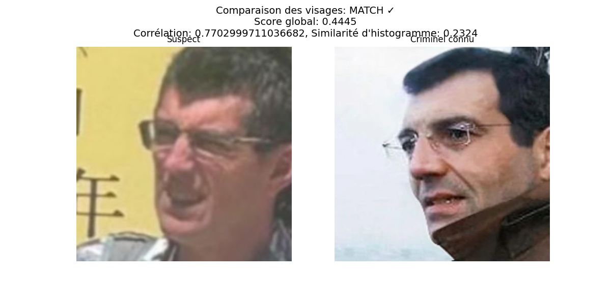

Investigation sur la correspondance potentielle d'un suspect avec un criminel recherché
Date de l'analyse: 27/04/2025 05:27:23
Ce rapport présente les résultats d'une analyse biométrique faciale visant à déterminer si un suspect correspond à un individu recherché.
✓ Une correspondance significative a été détectée avec un niveau de confiance de 44%.
Meilleure correspondance: image1.JPG correspond à 7fc05c8a15a6ca2f-580x0-1.webp avec une similarité de 0.4445
Les images ci-dessous montrent la comparaison visuelle entre le suspect et la meilleure correspondance identifiée:
Le tableau ci-dessous présente l'ensemble des comparaisons effectuées, triées par degré de similarité:
| Image du suspect | Image du criminel | Score global | Corrélation | Similarité d'histogramme | SSIM | Résultat |
|---|---|---|---|---|---|---|
| image1.JPG | 7fc05c8a15a6ca2f-580x0-1.webp | 0.4445 | 0.7702999711036682 | 0.2324 | 0.2222 | MATCH |
| image1.JPG | image2.JPG | 0.0767 | 0.11879999935626984 | 0.0091 | 0.0882 | PAS DE MATCH |
| image1.JPG | image1.png | 0.0506 | 0.08659999817609787 | -0.0634 | 0.1166 | PAS DE MATCH |
| image1.JPG | xavier-dupont-de-ligonnes-cet-etrange-tic-qui-le-trahit.jpeg | -0.1037 | -0.3603000044822693 | 0.049 | 0.0857 | PAS DE MATCH |
Cette analyse utilise plusieurs techniques avancées de comparaison faciale pour déterminer si le suspect correspond à un individu recherché:
Note importante: Les résultats de cette analyse doivent être interprétés par un expert et ne constituent pas une preuve définitive d'identité. D'autres facteurs comme l'âge des photos, les conditions d'éclairage, l'angle de prise de vue et d'éventuelles modifications physiques peuvent influencer les résultats.
Les seuils utilisés ont été calibrés pour minimiser les faux positifs tout en maintenant une sensibilité suffisante pour détecter des correspondances potentielles.